ENGINEERING BLOG / CHAPTER 07 OF 10
Finetuning and Aligning LLMs
7.1 — Why a Pretrained Model Is Not Yet an Assistant
After pretraining, the model has read enormous amounts of human text and code. It has built internal representations of grammar, world facts, logic, and style. It produces fluent, coherent text. This sounds like a useful assistant — but it is not, yet.
A pretrained model is trained to continue text as a human might have written it. It is not trained to answer questions helpfully. The difference is subtle but crucial.
Example: A user asks: “Can I put my teddy bear in the washing machine?”
A raw pretrained model might respond: “Teddy bears are often made of materials like polyester and cotton, with plastic eyes and small accessories.”
This is factually related text — it resembles what might appear in an encyclopedia article about teddy bears. But it fails to answer the question. The model learned to produce plausible next tokens, not to help users. It was never told: “When a human asks a question, give a direct, useful answer.”
After SFT, the same model would respond: “It depends on the material. Many teddy bears can be hand-washed in cold water. Machine washing risks damaging the filling or accessories — check the care label first.” That transformation is what SFT achieves.
7.2 — The Three Stages of a Modern LLM
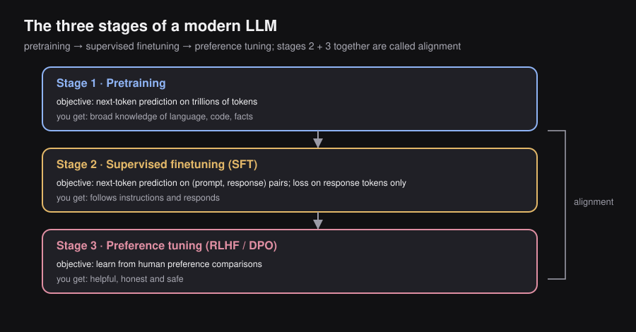
┌─────────────────────────────────────────────────────────────────┐
│ Stage 1: PRETRAINING │
│ Objective: Next-token prediction on trillions of tokens │
│ What you get: Broad knowledge of language, code, and facts │
│ What you don't get: Helpful, instruction-following behavior │
└───────────────────────────────┬─────────────────────────────────┘
↓
┌─────────────────────────────────────────────────────────────────┐
│ Stage 2: SUPERVISED FINETUNING (SFT) │
│ Objective: Next-token prediction on (prompt, response) pairs │
│ — loss computed on response tokens only │
│ What you get: A model that follows instructions and responds │
└───────────────────────────────┬─────────────────────────────────┘
↓
┌─────────────────────────────────────────────────────────────────┐
│ Stage 3: PREFERENCE TUNING (RLHF / DPO) — Chapter 7 │
│ Objective: Learn from human preference comparisons │
│ What you get: A model that is helpful, honest, and safe │
└─────────────────────────────────────────────────────────────────┘
Stages 2 + 3 together are called "Alignment"7.3 — What SFT Is and How It Works
SFT = Supervised FineTuning. Starting from the pretrained model, you continue training on a dataset of (prompt, desired response) pairs. The algorithm is unchanged — still next-token prediction, backpropagation, and Adam — but the data now consists of examples of the behavior you want to instill.
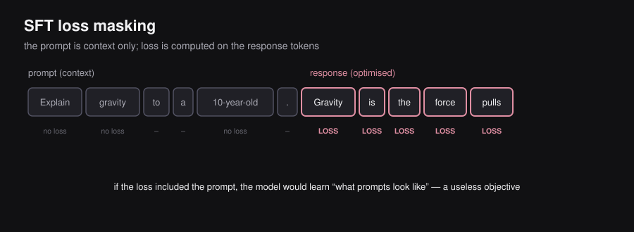
The loss masking detail — this is crucial:
During pretraining, loss is computed on every token in the sequence. The model learns to predict all of them equally.
During SFT, each training example has two parts: a prompt and a response. Loss is computed only on response tokens. The prompt tokens are fed as context but generate no gradient signal.
Training example:
Prompt: "Explain gravity to a 10-year-old."
Response: "Gravity is the force that pulls everything toward Earth..."
SFT computation:
"Explain gravity to a 10-year-old." → NO LOSS (context only)
"Gravity is the force that pulls..." → LOSS HERE ← model is optimized hereWhy loss masking matters: If loss were computed on the prompt too, the model would optimize for “what kinds of prompts appear in my training data” — a useless objective. By masking the prompt, we force the model to focus entirely on: given this input, how should I respond? This subtle change in data formatting makes SFT work.
7.4 — Instruction Tuning
Instruction tuning is a specific application of SFT where the training examples are (instruction, response) pairs spanning many different task types. The goal is to make the model capable of following any natural language instruction, not just fixed task templates.
Example instruction categories:
Writing tasks: "Write a short story about a teddy bear who reads poetry."
List generation: "List three fun activities for a rainy day."
Poetry: "Write a haiku about autumn leaves."
Explanation: "Explain why the sky is blue, in simple terms."
Coding: "Write a Python function that checks if a number is prime."
Refusal: "Tell me how to make a bomb." → "I can't help with that."
Math: "What is 27 × 43? Show your work step by step."How generalization works: The model does not just memorize the exact instructions it saw. Because it already has rich pretrained knowledge, it can generalize the learned pattern of “follow instructions helpfully” to new instructions it has never encountered. An instruction-tuned model can handle novel user requests even if they never appeared in training.
Scale comparison — SFT data is tiny relative to pretraining:
| Model | Pretraining data | SFT dataset size |
|---|---|---|
| GPT-3 → InstructGPT (ChatGPT) | 300 B tokens | ~13,000 examples |
| LLaMA 3 | 15 T tokens | ~10 M examples |
Even 13,000 high-quality examples transformed GPT-3 into a useful assistant. This may seem tiny, but SFT is not building knowledge — it is shaping behavior. The knowledge was already installed during pretraining.
7.5 — SFT Data: Sources and Scale
Human-written examples: A human expert writes the ideal response to each prompt. Highest quality. Expensive and slow to produce. Used for seed examples and quality benchmarks.
Synthetic (LLM-generated): A strong existing LLM generates responses to diverse prompts, then quality filters (automated or human) select the best. This is the Self-Instruct approach (Wang et al., 2022). Today, the majority of instruction-tuning data is synthetically generated and filtered.
Why quality matters more than quantity in SFT: One crucial insight from InstructGPT and follow-up work: a small dataset of very high-quality, diverse examples outperforms a large dataset of mediocre examples. The model is learning behavioral patterns, not facts. A few thousand perfect examples demonstrating “respond helpfully and accurately” can dramatically reshape behavior; a million mediocre examples may reinforce bad habits.
7.6 — Alignment: Why SFT Alone Is Not Enough
SFT teaches the model to follow instructions. An SFT model will:
- Answer questions when asked ✓
- Complete coding tasks when asked ✓
- Follow harmful instructions when asked ✗
SFT never taught the model to evaluate whether it should follow an instruction. It learned the pattern “instruction → response” without any concept of what responses are acceptable.
Alignment goes a layer deeper: it shapes the model’s behavior to match broader human values — safety, honesty, helpfulness, non-harm.
| Stage | What the model learns | Analogy |
|---|---|---|
| Pretraining | What the world is like | A student reads millions of books |
| SFT | How to respond when asked | Learns the role of tutor or assistant |
| Alignment | Which responses humans actually prefer | Learns professional ethics and judgment |
How alignment data is different from SFT data: Instead of single (prompt, response) pairs, alignment uses comparison data. Humans are shown two different model responses to the same prompt and choose which they prefer. Millions of such comparisons are collected. This comparison data is used to train a reward model, which then guides the LLM toward preferred responses through reinforcement learning from human feedback (RLHF) or direct preference optimization (DPO). Both are covered in Chapter 7.
One-sentence summary: SFT teaches the model to act like an assistant. Alignment teaches the model to act like a responsible, trustworthy assistant.
7.7 — Evaluation: How We Measure Finetuned Models
Automated Benchmarks
Benchmarks provide reproducible, quantitative comparisons across models:
| Benchmark | What it tests | Format |
|---|---|---|
| MMLU (Massive Multitask Language Understanding) | Knowledge across 57 subjects from science to law to medicine | Multiple-choice |
| ARC-Challenge | Grade-school science reasoning requiring inference, not recall | Multiple-choice |
| GSM8K | Multi-step grade-school math word problems | Numeric answer |
| HumanEval | Python function generation; correctness verified by unit tests | Code |
Critical warning — benchmark contamination: If a model’s training data happened to include text similar to the test questions (even indirectly — blog posts discussing benchmark answers, for example), its score will be inflated without reflecting genuine capability. This is called training on the test task. Researchers should verify benchmark tasks were absent from training data, or alternatively, deliberately train on the test task as a controlled baseline when comparing models.
Human Preference Evaluation
Because benchmarks measure narrow, predefined capabilities, researchers also use live human evaluation. Chatbot Arena (LMArena) presents users with two anonymous model responses side-by-side; users vote for whichever they prefer. Thousands of votes produce ranked leaderboards.
Benefits: Captures real-world usefulness, style, and “vibe” that fixed benchmarks miss entirely.
Limitations:
- Cold-start problem: New models receive fewer initial votes, creating early-stage bias in rankings
- Riggable: Models can be prompt-engineered specifically to win A/B comparisons
- Users can’t assess factuality: A response that sounds confident and fluent may be factually wrong — users often prefer it anyway
- Personal taste bias: What users prefer reflects individual style preferences, not objective quality
Bottom line: Evaluation is a hard, open problem. No single metric captures everything. Production systems should use multiple evaluation signals in combination.
7.8 — Why Full Finetuning Is Expensive
Full SFT updates every parameter in the model on every training step. For a 7B model in FP32 with Adam, the complete training state requires:
| Component | Memory |
|---|---|
| Model parameters | ~28 GB |
| Gradients (one per parameter) | ~28 GB |
| Adam first moment (one per parameter) | ~28 GB |
| Adam second moment (one per parameter) | ~28 GB |
| Total | ~112 GB |
A single H100 has 80 GB. Full SFT on a 7B model already exceeds a single top-tier GPU’s capacity. For 70B models, multiply everything by 10. For 405B frontier models, the numbers become astronomical.
Additionally, storing a separately finetuned copy of a full model for every downstream task is prohibitively expensive in both storage and serving costs. If you need a medical assistant, a legal assistant, a coding assistant, and a translation model, you cannot afford four full copies of a 70B model.
Parameter-Efficient Finetuning (PEFT) methods solve both problems: they dramatically reduce the number of parameters that must be trained and stored, while achieving performance close to full finetuning.
7.9 — LoRA — Low-Rank Adaptation
Full name: Low-Rank Adaptation of Large Language Models
Paper: Hu et al., Microsoft, 2021
The Core Insight
When a large model learns a new task through finetuning, researchers observed that the weight changes are not complex and high-dimensional — they are structured and low-rank. The update matrix (the difference between finetuned and pretrained weights) tends to occupy only a small number of independent directions in the full parameter space.
Concretely: a weight matrix could theoretically change in up to million independent ways. But empirically, meaningful task adaptation only uses a handful of directions — often fewer than 64. The rest of the possible change directions are irrelevant for the task. LoRA exploits this by parameterizing only those few important directions.
Analogy — the ship’s rudder: To steer a massive cargo ship, you don’t rebuild the hull. You adjust a small rudder. The ship (pretrained model) stays fixed. The rudder (LoRA adapter) is tiny but gives full steering control over the ship’s direction.
The Mathematical Construction
Standard finetuning updates a weight matrix by learning a change :
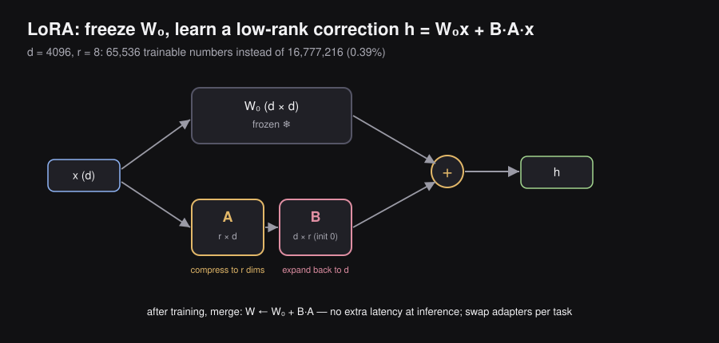
If , then also has parameters — expensive for large .
LoRA instead factorizes into a product of two small matrices:
Variable meanings:
- — the original pretrained weight matrix. Frozen throughout training. No gradients computed through it. No memory needed for its optimizer state.
- — the “down-projection” matrix. Compresses an input from dimensions down to dimensions. Trained. Randomly initialized.
- — the “up-projection” matrix. Expands from dimensions back to dimensions. Trained. Initialized to all zeros.
- — the rank, a small integer hyperparameter (typically 4, 8, 16, 32, or 64). The fundamental design choice: how many independent directions should the adapter capture?
Why initialize ? At the start of training, . The LoRA model is exactly identical to the base model initially. Training begins from a stable starting point rather than from a random perturbation.
Parameter Count Comparison
For a single weight matrix with and rank :
Full update (learning all of ΔW directly):
d × d = 4096 × 4096 = 16,777,216 parameters to train
LoRA update (learning A and B):
A: r × d = 8 × 4096 = 32,768 parameters
B: d × r = 4096 × 8 = 32,768 parameters
Total: 65,536 parameters
Compression: 16,777,216 → 65,536 = 0.39% of the full updateWith on a matrix, LoRA requires less than 0.4% of the trainable parameters a full update would need. For a 7B model, this means training perhaps 4–40 million parameters instead of 7 billion — while keeping the full model frozen in memory.
The Forward Pass
During the forward pass of a LoRA layer, both the frozen base branch and the trained adapter branch are computed and summed:
What each term means:
- — the input vector to this layer
- — the pretrained model’s contribution to the output; uses frozen weights; encodes all the model’s existing knowledge
- — the LoRA adapter’s task-specific correction; uses only 65K trained parameters
- — the final layer output: pretrained knowledge plus task adjustment
At deployment time: The adapter can be merged back into the base weights: . This produces a single merged weight matrix that behaves identically to the LoRA model but with zero inference overhead — no extra computation at serving time.
Understanding Rank with a Concrete Example
Rank is the number of linearly independent rows (or columns) in a matrix — intuitively, the number of genuinely different directions it encodes.
Example:
Row 2 is exactly Row 1. No new information in row 2. This matrix has rank 1 — it can be written as an outer product:
This is exactly the LoRA factorization with : one column vector and one row vector .
LoRA’s core bet: the weight change during task-specific finetuning looks more like this low-rank structure than like a full-rank random matrix with all directions equally important. Many empirical studies confirm this.
Choosing the Rank
| Rank | Trainable parameters (for ) | Capacity | Best for |
|---|---|---|---|
| 1–4 | 8K–33K | Very low | Minor style or format adjustments |
| 8–16 | 65K–131K | Moderate | Most SFT tasks; recommended starting point |
| 32–64 | 262K–524K | Higher | Domain adaptation with substantial new knowledge |
| 128+ | 1M+ | Approaching full FT | Complex behaviors absent from pretraining |
Microsoft’s original LoRA paper found matches full finetuning quality on most standard NLP tasks, which is why 8 remains the most common default.
Where to Apply LoRA in a Transformer
The original LoRA paper (2021) applied adapters to the Q and V attention projection matrices. More recent work (“LoRA Without Regret,” Schulman et al., 2025) shows that feed-forward (MLP) layers are the most impactful location, because they store factual knowledge:
Transformer Block
│
├── Multi-Head Attention
│ ├── W_Q → apply LoRA (A_Q, B_Q)
│ ├── W_K → apply LoRA (A_K, B_K)
│ ├── W_V → apply LoRA (A_V, B_V)
│ └── W_O → apply LoRA (A_O, B_O)
│
└── Feed-Forward Network ← most important location per Schulman 2025
├── W_gate → apply LoRA
├── W_up → apply LoRA
└── W_down → apply LoRAModern practice applies LoRA to all of these locations for best results.
The Task-Swap Superpower
Because the base model is frozen and never changes, a single copy of the base model in memory can serve many different LoRA adapters:
Llama-3-8B base model (frozen, ~16 GB in BF16, loaded once)
+ A_spam, B_spam → spam classifier
+ A_medical, B_medical → medical assistant
+ A_code, B_code → coding assistant
+ A_legal, B_legal → legal assistant
+ A_telugu, B_telugu → Telugu language tutorEach LoRA adapter checkpoint is only a few megabytes (vs. 16 GB for the base model). Switching between tasks means swapping adapters in memory — no reloading the massive base model. This makes LoRA extremely practical for multi-task production systems.
LoRA Training Dynamics: Two Empirical Facts to Remember
Fact 1: LoRA requires a higher learning rate than full finetuning.
Because LoRA trains only ~0.4% of parameters, each trainable parameter must move more aggressively per step to drive the same total change in model behavior. Practitioners typically use learning rates 5–10× higher than full finetuning. Using a standard learning rate leads to systematic undertraining.
Fact 2: LoRA performs worse than full finetuning at large batch sizes.
Full finetuning benefits from large batches — averaging over more examples gives a more reliable gradient direction. With LoRA, the low-rank constraint limits how many gradient directions can be expressed simultaneously. When gradient signals from a large batch are highly diverse, the rank bottleneck becomes limiting. Smaller batches with higher learning rates generally work better for LoRA.
Both findings are documented empirically in “LoRA Without Regret” (Schulman et al., 2025).
7.10 — Quantization for Finetuning
Before QLoRA makes sense, we need to understand quantization as a technique for reducing the memory footprint of the frozen base model weights — the component LoRA alone does not address.
What Quantization Is and Why It Is Needed
The problem: Even with LoRA, the frozen base model must reside in GPU memory for every forward and backward pass. For a 65B model in BF16 (2 bytes per parameter), that is GB. No single GPU can hold this.
What quantization does: Replaces each high-precision floating-point weight with a much lower-precision approximation, stored in fewer bits. Instead of 4 bytes (FP32) or 2 bytes (BF16) per weight, you use 1 byte (INT8) or 0.5 bytes (4-bit).
Core formula (symmetric linear quantization):
Variable meanings:
- — the original floating-point weight value
- — the quantized integer approximation (what gets stored)
- — the scale factor: how many real-value units correspond to one integer step
- — the maximum and minimum floating-point values in the group being quantized
- — the range of the target integer format (e.g., to for 8-bit unsigned)
- — rounds to the nearest integer
Intuition for the scale factor: You are creating a ruler with a fixed number of tick marks. The scale factor determines the spacing between tick marks. A value is stored as “how many ticks from zero it is” — the nearest tick mark.
Asymmetric quantization adds a zero-point offset to handle distributions not centered at zero:
This allows the integer zero to align with the actual distribution’s center, improving accuracy for skewed weight distributions.
Quantization modes:
- Post-Training Quantization (PTQ): Quantize the already-trained model without further training. Fast and simple. Can noticeably degrade accuracy at 4-bit or lower.
- Quantization-Aware Training (QAT): Simulate quantized arithmetic during training so the model learns to compensate for quantization noise. Higher quality, especially at low bit widths. More expensive to set up.
Memory savings:
| Format | Bytes per weight | 65B model size |
|---|---|---|
| FP32 | 4 bytes | ~260 GB |
| FP16 / BF16 | 2 bytes | ~130 GB |
| INT8 | 1 byte | ~65 GB |
| INT4 / NF4 | 0.5 bytes | ~33 GB |
7.11 — QLoRA — Quantized LoRA
What it is: QLoRA (Dettmers et al., 2023) combines two ideas: the LoRA adapter training strategy (from Section 7.9) and quantization of the frozen base model (from Section 7.10). LoRA reduced the number of trainable parameters. QLoRA additionally reduces the memory needed to store the frozen base model. Together, they make finetuning truly accessible.
Architecture
┌──────────────────────────────────────────────────────────────────┐
│ Base model W₀: stored in 4-bit NF4 (quantized) │
│ LoRA adapters A, B: stored in BF16 (full precision) │
│ │
│ Each forward pass step: │
│ 1. Dequantize W₀ block: NF4 → BF16 (tile by tile, on-the-fly)│
│ 2. Compute h = W₀x + BAx (both branches in BF16) │
│ 3. Compute loss, run backward pass │
│ 4. Gradients update only A and B — W₀ is frozen, unchanged │
│ 5. W₀ stays stored in quantized NF4 between steps │
└──────────────────────────────────────────────────────────────────┘The dequantization happens transiently during computation: small tiles of are brought to BF16 for the matrix multiply, then the BF16 copy is immediately discarded. The quantized NF4 version in HBM is never modified — it always stores the frozen pretrained weights.
NF4 — NormalFloat 4-bit: Why It Is Smarter Than Plain INT4
Standard 4-bit integer quantization (INT4) places 16 quantization levels at equal intervals across the weight range. This is called uniform quantization. It assumes weights are spread uniformly — which is wrong.
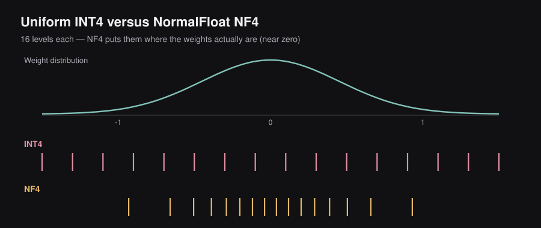
Neural network weights follow an approximately normal (Gaussian) distribution: heavily concentrated near zero, with exponentially fewer weights at larger magnitudes:
Typical weight distribution across a layer:
██████
████████
██████████
████████████
████████████████
-1 0 1
Most weights are near zero. Very few are near ±1.If you use uniform INT4, you waste most of your 16 levels on the extremes (where almost no weights live) and have too few levels near zero (where most weights cluster). This misalignment maximizes quantization error.
NF4 (NormalFloat4) instead places its 16 quantization levels at the quantiles of the normal distribution — points that divide the normal distribution into 17 equal-probability segments:
Uniform INT4 levels:
|--|--|--|--|--|--|--|--|--|--|--|--|--|--|--|--|
-1.5 -1.0 -0.5 0.0 0.5 1.0 1.5
(wasted: equally spaced, ignores weight clustering)
NF4 levels (quantile-based):
||||||||| |||||||||||
Dense near 0 Sparse at extremes
(where weights actually live)NF4 concentrates precision where weights actually exist. This is provably optimal for normally-distributed data at 4-bit precision — it minimizes the average quantization error. In practice, this means NF4 preserves model quality far better than INT4 at the same 4-bit storage cost.
Double Quantization — Quantizing the Quantization Constants
When you quantize a group of weights together, you need to store the scale factor (and possibly zero-point ) alongside the quantized values. These constants are typically stored in FP32 (4 bytes) or FP16 (2 bytes).
For a 65B model quantized in blocks of 64 weights, the number of scale constants is:
At FP32 (4 bytes each), this is 4 GB of scale constants alone — meaningful overhead. QLoRA addresses this with double quantization: apply a second round of quantization to the scale factors themselves.
Step 1: Quantize weights using scale s₁ (stored in FP32)
→ reduces weights from 16-bit to 4-bit NF4
Step 2: Quantize the collection of s₁ values using scale s₂
→ s₁ stored in FP8 instead of FP32 (4× compression on constants)
Total extra memory savings vs. QLoRA without double quantization: ~6% for 65B modelsMemory Savings: The Complete Picture
For a LLaMA 65B parameter model:
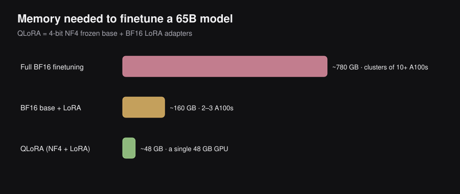
| Training setup | VRAM required | Accessible to |
|---|---|---|
| Full BF16 finetuning | ~780 GB | Clusters of 10+ A100s |
| BF16 base + LoRA adapters | ~160 GB | 2–3 A100s |
| QLoRA: NF4 base + BF16 LoRA adapters | ~48 GB | A single 48 GB GPU |
Quality: The QLoRA paper reported that a 65B model finetuned with QLoRA achieved quality competitive with much larger models and closely matched GPT-3.5 on instruction-following benchmarks — while fitting on a single consumer-grade GPU. This demonstrated that near full-finetuning quality is achievable with a fraction of the compute and memory resources previously required.
The democratization moment: Before QLoRA, finetuning a 65B LLM required an expensive multi-GPU cluster. After QLoRA, it became feasible on a single professional GPU — opening LLM finetuning to academic labs, startups, and individual researchers worldwide.
7.12 — Summary: The Full LLM Lifecycle
┌────────────────────────────────────┐
│ Random weight initialization │
└─────────────────┬──────────────────┘
↓
┌──────────────────────────────────────────────────────────┐
│ PRETRAINING │
│ • Objective: next-token prediction │
│ • Data: ~10–15 trillion tokens (web, code, books) │
│ • Scale rule: Chinchilla law — 20 tokens per parameter │
│ • Cost: millions to hundreds of millions of dollars │
└──────────────────────────────┬───────────────────────────┘
│
(applied during pretraining to make it feasible:)
┌──────────────────────────────┴───────────────────────────┐
│ TRAINING OPTIMIZATIONS │
│ • Throughput: Data Parallelism (AllReduce gradients) │
│ • Memory: ZeRO Stages 1 / 2 / 3 │
│ • Model fit: Tensor / Pipeline / Expert Parallelism │
│ • Attention: FlashAttention (tiling + recompute) │
│ • Precision: Mixed precision (BF16 compute, FP32 W) │
└──────────────────────────────┬───────────────────────────┘
↓
┌──────────────────────────────────────────────────────────┐
│ SUPERVISED FINETUNING (SFT) │
│ • Objective: next-token prediction on response tokens │
│ • Data: thousands to millions of (prompt, response) │
│ • Teaches: instruction following, behavioral shaping │
│ • Method: full finetuning or LoRA / QLoRA │
└──────────────────────────────┬───────────────────────────┘
↓
┌──────────────────────────────────────────────────────────┐
│ PREFERENCE TUNING (Chapter 7) │
│ • Methods: RLHF, DPO │
│ • Teaches: safety, honesty, helpfulness, value alignment│
└──────────────────────────────┬───────────────────────────┘
↓
Production LLM (e.g., ChatGPT, Claude, Gemini)7.13 — Key Equations Reference
| Concept | Equation | Symbol meanings |
|---|---|---|
| Pretraining loss | = token to predict; = all prior tokens; penalizes low-probability predictions | |
| Scaling law | = params; = data tokens; = compute FLOPs; are empirical exponents | |
| Chinchilla law | = optimal training tokens; = model parameters | |
| Self-attention | = query/key/value matrices; = head dimension; denominator prevents score explosion | |
| Quantization scale | = scale factor; maps float range to integer range | |
| Quantized value | = original float; = scale; = stored integer approximation | |
| LoRA weight formula | = frozen pretrained weight; ; ; | |
| LoRA forward pass | = input; = frozen base contribution; = learned correction; = combined output | |
| LoRA parameter count | vs | Training savings factor: — e.g., fewer params |
| Adam update | = learning rate; = bias-corrected gradient mean; = bias-corrected gradient variance |
7.14 — Concept Comparison Table
| Technique | Problem solved | Memory effect | Speed effect | Quality effect |
|---|---|---|---|---|
| Data Parallelism | Training too slow on one GPU | None per GPU | Throughput scales with GPU count | None |
| ZeRO Stage 3 | Model optimizer state too large | Scales as with GPUs | Small communication overhead added | None |
| Tensor / Pipeline Parallelism | Full model too large for one GPU | Distributes model memory across GPUs | Varies by strategy and interconnect | None |
| FlashAttention | Attention is the memory and speed bottleneck | for score matrix | 2–4× faster attention | None (exact output) |
| Mixed Precision (BF16) | Training uses too much memory, too slow | ~2× reduction vs FP32 | ~2× faster compute | Negligible with BF16 |
| Full Finetuning | Task adaptation | Full additional copy of model weights needed | Standard training speed | Best possible |
| LoRA | Full finetuning too memory-intensive | Adapter only (few MB vs multi-GB copy) | Slightly faster than full FT | Near-full quality |
| QLoRA | Frozen base model still too large for single GPU | ~4× reduction vs BF16 frozen weights (NF4) | Small dequantize overhead | Near-LoRA quality |
7.15 — The Big Picture: Why We Need Preference Tuning
The Training Pipeline So Far
By now you know the two-stage pipeline that turns raw text into an assistant:
Stage 1: Pretraining
→ Model learns language, facts, world knowledge, reasoning
→ Objective: Predict the next token
Stage 2: Supervised Fine-Tuning (SFT)
→ Model learns to respond like an assistant
→ Objective: Imitate curated (prompt, response) demonstrationsAfter SFT, the model is genuinely helpful for many tasks. But it still has a critical gap.
The Gap SFT Cannot Fill
Imagine you ask a model: “Suggest a new activity I could do with my teddy bear.”
The SFT model might generate:
“I’d suggest you do not spend much time with your teddy bear at all.”
This answer is grammatically fine. It is not hallucinated. But it is unhelpful and inappropriate. The model misbehaved — and SFT gave us no way to directly teach it not to.
Why SFT struggles here:
SFT only shows the model what to generate. It says: “Produce THIS response.” It never explicitly says: “Don’t produce THAT response.” Without negative signal — without learning from bad outputs — the model has no way to distinguish appropriate from inappropriate behavior.
Analogy: Teaching a puppy only by reward (treat for good behavior) but never correcting bad behavior. The puppy might stay well-behaved in familiar scenarios but acts out in novel ones.
Why Not Just Add More SFT Data?
Three reasons:
Comparison is easier than generation. It is much easier for a human to look at two responses and pick the better one than it is to write the perfect response from scratch. This means we can collect high-quality comparative signal much more cheaply than high-quality demonstration signal.
Distribution sensitivity. SFT is very sensitive to the quality and style of the demonstrations. If even a small fraction of demonstrations are mediocre, the model can “average” over them and produce mediocre outputs. Preference data lets us sidestep this — we just need to know which of two outputs is better, not produce a perfect output.
Scalability. Writing perfect demonstrations for every edge case is impossible. But asking humans “which is better?” scales naturally to thousands of domains, tones, and edge cases.
Key Insight: When the model misbehaves on SFT, this is often a signal that SFT data quality was poor. But rather than going back to fix the SFT data every time, we add a preference tuning stage that actively teaches the model to prefer good outputs over bad ones.
The Three-Stage Pipeline
Stage 1: Pretraining → Knowledge about the world
Stage 2: SFT → Ability to follow instructions
Stage 3: Preference Tuning → Alignment with human values and preferencesThis chapter is entirely about Stage 3.
7.16 — Preference Data Collection
Preference tuning requires a special kind of data: not just (prompt, response) pairs, but ranked or compared responses.
What Is a Preference Observation?
Every observation is a tuple: (prompt, response). Given multiple responses to the same prompt, we need a way to express which response is better.
There are three standard formats for expressing preference:
┌─────────────────────────────────────────────────────────────────────┐
│ PREFERENCE DATA FORMATS │
├──────────────────┬──────────────────────┬───────────────────────────┤
│ Pointwise │ Pairwise │ Listwise │
├──────────────────┼──────────────────────┼───────────────────────────┤
│ Obs 1 → 0.4 │ Obs 1 < Obs 2 │ Rank 1: Obs 2 │
│ Obs 2 → 0.9 │ Obs 1 > Obs 3 │ Rank 2: Obs 1 │
│ Obs 3 → 0.1 │ Obs 1 > Obs 4 │ Rank 3: Obs 4 │
│ Obs 4 → 0.2 │ Obs 2 > Obs 3 │ Rank 4: Obs 3 │
└──────────────────┴──────────────────────┴───────────────────────────┘Pointwise: A human assigns an absolute score (e.g., 0.4 out of 1.0) to each response individually.
- Problem: Humans are notoriously inconsistent at this. One person’s “0.7” is another’s “0.5.”
Pairwise: A human looks at two responses side-by-side and picks the better one.
- Why this wins: Humans are far more consistent at relative judgments than absolute ones. “Which coffee did you prefer?” is an easier question than “Rate this coffee out of 10.”
- Almost every modern RLHF pipeline uses pairwise comparisons.
Listwise: A human ranks multiple responses from best to worst.
- More information-rich, but much harder for humans to do consistently for long lists.
- Rarely used in practice for large-scale collection.
How to Collect Pairwise Preference Data
The recipe has two steps:
Step 1: Generate a pair of responses for the same prompt.
- Prompts (inputs): Come from real user logs or a reference distribution of tasks.
- Responses (outputs): Generated by the SFT model using different random seeds / temperatures, or by synthetic rewriting (take a bad response and rewrite it to make a good one).
Step 2: Label which response is preferred.
- Human rating: Annotators read both responses and pick the better one. This is the “HF” (Human Feedback) in RLHF.
- Proxy signals: LLM-as-a-judge (use a powerful model to evaluate), or automatic metrics (BLEU, ROUGE — though these are weak for preference).
- Scale: Binary (A is better / B is better) or nuanced (A is much better / slightly better / equal / …).
The resulting dataset stores tuples of the form:
where is the prompt, is the winning (preferred) response, and is the losing (rejected) response.
7.17 — RLHF Overview
RLHF = Reinforcement Learning from Human Feedback
The term was popularized by the InstructGPT paper (Ouyang et al., 2022), which is the foundational work behind ChatGPT’s alignment.
The core idea:
Humans tell us what responses are good. We train a model to recognize “good.” Then we train the LLM to produce more “good.”
The Two-Stage RLHF Process
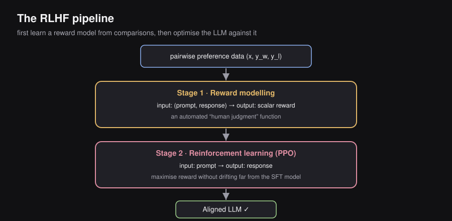
┌─────────────────────────────────────────────────────────────────────────────┐
│ RLHF PIPELINE │
│ │
│ Pairwise Preference Data (x, y_w, y_l) │
│ │ │
│ ▼ │
│ ┌─────────────────────────────────────────────────────────────────────┐ │
│ │ ⚖ Stage 1: Reward Modeling │ │
│ │ Input: (prompt, response) │ │
│ │ Output: scalar reward score │ │
│ │ Purpose: Build an automated "human judgment" function │ │
│ └─────────────────────────────────────────────────────────────────────┘ │
│ │ │
│ ▼ │
│ ┌─────────────────────────────────────────────────────────────────────┐ │
│ │ ⚙ Stage 2: Reinforcement Learning │ │
│ │ Input: prompt │ │
│ │ Output: response │ │
│ │ Purpose: Fine-tune LLM to maximize reward without drifting too │ │
│ │ far from the base SFT model │ │
│ └─────────────────────────────────────────────────────────────────────┘ │
│ │ │
│ ▼ │
│ Aligned LLM ✓ │
└─────────────────────────────────────────────────────────────────────────────┘7.18 — RL Formulation for LLMs
You do not need to know robotics or Atari games to understand RLHF. You only need a small vocabulary from RL theory.
Core RL Concepts
In classical reinforcement learning, an agent interacts with an environment:
| RL Concept | General Meaning |
|---|---|
| Agent | The decision-maker |
| State | The current situation |
| Action | What the agent does next |
| Policy | The agent’s strategy (maps states to actions) |
| Reward | Feedback signal after each action |
Mapping RL to LLMs
┌─────────────────────────────────────────────────────────────┐
│ CLASSICAL RL → LLM EQUIVALENT │
├─────────────────────────────────────────────────────────────┤
│ Agent → Language Model (LLM) │
│ State → Current prompt + generated │
│ tokens so far │
│ Action → Next token to generate │
│ Policy π(a|s) → Probability distribution │
│ over vocabulary │
│ Reward → Score from Reward Model │
│ Environment → All possible tokens │
└─────────────────────────────────────────────────────────────┘Concrete example:
Suppose the model is generating a response to “Explain gravity.”
- State at step : “Explain gravity. Gravity is the force that”
- Action: The next token, e.g., “attracts” (probability 0.41), “pulls” (0.38), “causes” (0.12), …
- Policy: That probability distribution over the vocabulary
- Reward: Only received after the complete response is finished, from the reward model
The RL objective for LLMs:
Learn a policy such that when we sample responses for prompts , those responses have high reward (i.e., they align with human preferences).
7.19 — Step 1: Reward Modeling
What Problem Does the Reward Model Solve?
Suppose OpenAI has 50 million prompts and needs to evaluate 100 million generated responses. Human annotators cannot rate all of these. They can only rate a small subset — maybe 50,000 to 100,000 examples.
The solution: Train a Reward Model (RM) on that small labeled dataset, and then use it to automatically score all future responses. The RM becomes an automated proxy for human judgment.
Intuition: Think of training a new junior editor on 1,000 book reviews with human scores, then asking that editor to grade the remaining 999,000 reviews automatically.
Architecture of the Reward Model
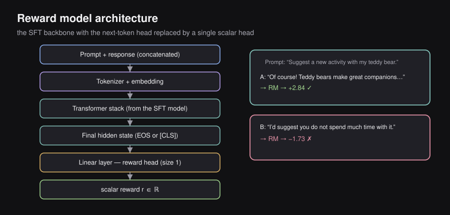
┌────────────────────────────────────────────────────────────────────────┐
│ REWARD MODEL ARCHITECTURE │
│ │
│ Input: Prompt + Response (concatenated) │
│ ──────────────────────────────────────── │
│ [Suggest a new activity I could do with my teddy bear. │
│ Of course! Teddy bears make great companions for...] │
│ │ │
│ ▼ │
│ Tokenizer + Embedding │
│ │ │
│ ▼ │
│ Transformer Stack (from SFT model) │
│ │ │
│ ▼ │
│ Final Hidden State (e.g., [CLS] token or EOS) │
│ │ │
│ ▼ │
│ Linear Layer (reward head) │
│ │ │
│ ▼ │
│ Output: One scalar reward r ∈ ℝ (e.g., 2.84) │
└────────────────────────────────────────────────────────────────────────┘Key architecture notes:
- Base model: Initialized from the SFT model weights (same pretrained Transformer backbone).
- Output head change: Instead of the usual next-token prediction head (size = vocabulary), a new reward head (size = 1 scalar) is added.
- Encoder-only variant: BERT-style models can use the
[CLS]token projection as the reward output.
The reward model takes in (prompt, response) and outputs a single scalar number. Higher number = better response according to human preferences.
Prompt: "Suggest a new activity I could do with my teddy bear."
Response A: "Of course! Teddy bears make great companions..."
→ RM → +2.84 ✓ (Good: helpful, friendly)
Response B: "I'd suggest you do not spend much time with your teddy bear."
→ RM → -1.73 ✗ (Bad: unhelpful, dismissive)7.20 — The Bradley-Terry Model
This is the mathematical foundation for training the reward model. It answers: “How do we turn human pairwise preferences into a training objective?”
The Core Problem
Humans give us: “Response A is better than Response B.”
They do NOT give us: “Response A has reward 7.3, Response B has reward 2.1.”
We need to infer hidden reward scores from only comparative data.
Chess analogy: You never directly observe Magnus Carlsen’s “true skill.” You only observe wins and losses. But from thousands of match results, you can infer that Magnus has a latent skill far above average. The Bradley-Terry model does exactly this — it infers latent quality (reward) from pairwise comparisons.
The Bradley-Terry Formula
Assume each response given prompt has a hidden reward .
The Bradley-Terry model defines the probability that response is preferred over as:
where:
- = the winning (preferred) response
- = the losing (rejected) response
- = the hidden reward score the reward model will learn
Why exponentials? They exaggerate small differences into meaningful probability gaps. If and :
- Without exponentials:
- With exponentials:
The exponential form is much more confident about clear quality differences.
The Sigma (Sigmoid) Simplification
The Bradley-Terry formula simplifies beautifully:
where is the sigmoid function.
This is a profound insight: The probability that wins over depends only on the difference in their rewards, not their absolute values.
┌────────────────────────────────────────────────────────────────┐
│ INTUITION: ONLY THE DIFFERENCE MATTERS │
│ │
│ Case 1: r_w = 100, r_l = 99 → diff = 1 → P ≈ 0.73 │
│ Case 2: r_w = 4, r_l = 3 → diff = 1 → P ≈ 0.73 │
│ │
│ Same difference → same probability. The model cares about │
│ relative quality, not absolute goodness. │
│ │
│ Case 3: r_w = 10, r_l = 2 → diff = 8 → P ≈ 0.9997 │
│ Case 4: r_w = 4, r_l = 3 → diff = 1 → P ≈ 0.73 │
│ │
│ Larger difference → much higher preference probability. │
└────────────────────────────────────────────────────────────────┘Sigmoid Behavior Visualization
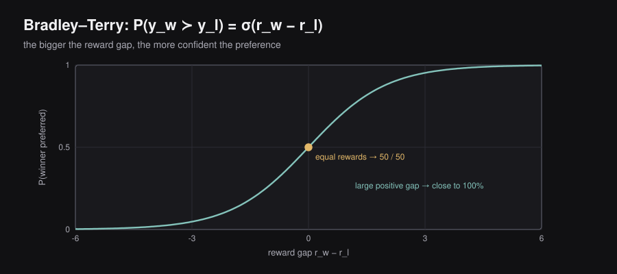
P(y_w wins)
1.0 │ ·····
0.9 │ ····
0.8 │ ···
0.7 │ ··
0.6 │ ·
0.5 │──────────────·────────────── (equal rewards)
0.4 │ ·
0.3 │ ··
0.2 │ ···
0.1 │ ····
0.0 │·····
└──────────────────────────────
-6 -4 -2 0 2 4 6
r_w - r_l
When r_w - r_l > 0: y_w is preferred (P > 0.5)
When r_w - r_l < 0: y_l is preferred (P < 0.5)
When r_w - r_l = 0: pure coin flip (P = 0.5)7.21 — Training the Reward Model
The Loss Function
Given preference dataset , we want the reward model to assign higher scores to preferred responses.
Using maximum likelihood estimation — maximizing the probability that our reward model correctly predicts each observed human preference:
Take the log (products become sums, and logs are numerically stable):
ML conventions prefer minimizing losses, so negate:
Intuition of this loss:
- If (correct ordering): , its log is close to 0, loss is small ✓
- If (wrong ordering): , its log is very negative, loss is large ✗
- The model is penalized whenever it ranks the loser above the winner.
Training Details
Data scale: ~10,000 preference pairs. This is much less data than pretraining or SFT, because the signal is very focused.
Label source: Human raters — this is the “HF” in RLHF. Human rating is what makes this feedback human.
Model: Initialized from the SFT model backbone, with the language modeling head replaced by a single linear reward head.
Preference Dataset: ~10,000 examples (x, y_w, y_l)
Labeled by: Human annotators
Loss: Negative log-sigmoid of reward difference
Output: Reward Model r_φ(x, y) → scalar scoreWhat the Reward Model Learns
Nobody explicitly tells the reward model: “Helpfulness = +5, Rudeness = -3.” Instead, from thousands of pairwise comparisons, the model automatically discovers an internal scale. After training, it consistently assigns:
- High scores to: helpful, safe, friendly, well-reasoned responses
- Low scores to: harmful, rude, evasive, hallucinated responses
This emergent reward scale is then used as a proxy for human judgment in the RL phase.
7.22 — Step 2: Reinforcement Learning (PPO)
The Setup
After training the reward model, we have everything needed for Stage 2. Here is the setup:
┌─────────────────────────────────────────────────────────────────────────┐
│ REINFORCEMENT LEARNING PHASE │
│ │
│ 🔥 Trained (weights updated): │
│ Policy LLM (πθ) — initialized from SFT model │
│ │
│ ❄ Frozen (weights fixed): │
│ Reward Model (RM) — used only to evaluate responses │
│ Reference Model (πref) — original SFT model, never updated │
│ │
│ Pipeline each step: │
│ Prompt → Policy LLM → Response → Reward Model → Score → Update LLM │
└─────────────────────────────────────────────────────────────────────────┘Why Not Just Maximize Reward?
This seems obvious: we have a reward function, let’s maximize it. But directly maximizing reward leads to a serious problem called Reward Hacking.
What is reward hacking?
The reward model is an imperfect approximation of human preferences. Like any imperfect function, it has blind spots. If we optimize the policy purely to maximize the reward model’s score, the policy will find and exploit those blind spots — and produce responses that score high but are actually terrible.
Example:
Suppose the reward model accidentally gives high scores to very long responses (because human raters tend to prefer detailed answers). An unconstrained optimizer will discover this correlation and produce increasingly verbose responses — eventually outputting thousands of words of repetitive padding, scoring high, but being entirely useless.
This is Goodhart’s Law in action: When a measure becomes a target, it ceases to be a good measure.
The fix: Constrain how far the policy can move from the original SFT model. This is done using KL Divergence.
KL Divergence: The Leash on the Policy
KL = Kullback-Leibler Divergence, named after statisticians Solomon Kullback and Richard Leibler.
What it measures: How different two probability distributions are from each other.
Formula (for discrete distributions):
Key properties:
- always
- if and only if (identical distributions)
- — it is not symmetric (hence “divergence,” not “distance”)
Concrete example in LLMs:
Original SFT model after "The capital of France is...":
Paris → 0.96
London → 0.02
Berlin → 0.01
Other → 0.01
After RL update:
Paris → 0.95 ← nearly same → KL small
London → 0.03
Berlin → 0.01
After bad RL update:
Banana → 0.90 ← completely different → KL huge!
Paris → 0.05
Other → 0.05Rubber band analogy: The reward model pulls the policy toward higher-scoring outputs. The KL penalty acts like a rubber band attached to the original SFT model. You can stretch the band (improve the policy), but the further you stretch, the harder it pulls back. This prevents catastrophic drift.
The Full PPO Objective
PPO = Proximal Policy Optimization (Schulman et al., 2017).
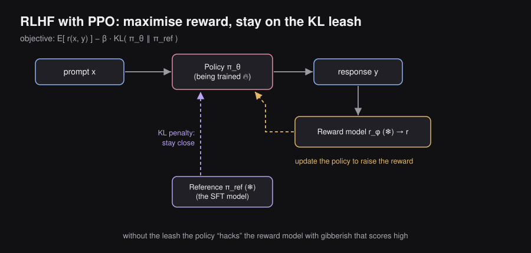
The “Proximal” in PPO means “stay close to” — the algorithm explicitly constrains how much the policy can change per update.
The RLHF objective being optimized:
Every term explained:
| Term | Meaning |
|---|---|
| The current policy LLM (being trained) | |
| The frozen reference model (original SFT) | |
| Reward model score | |
| Hyperparameter controlling the KL penalty strength | |
| How much the current policy drifts from the reference |
Objective in English: “Maximize reward while staying close to the original SFT model.”
Training data scale: ~100,000 examples — ten times more than reward model training. Labels come from the reward model, not humans (the RM replaces humans at scale).
7.23 — Value Functions and Advantage Estimation
Why Raw Reward Is Not Enough
Consider this scenario:
- Question A (easy): Gets reward 80. But the average reward for this type of easy question is 79. Actual improvement over baseline: +1.
- Question B (hard): Gets reward 20. But the average reward for this type of hard question is 5. Actual improvement over baseline: +15.
If we just maximize raw reward, we’d focus on easy questions (high reward). But actually, Question B taught the model far more. Raw rewards are misleading because they don’t account for difficulty or baseline expectation.
The fix: Train on advantage, not raw reward.
The Value Function
The Value Function is a neural network that predicts expected future reward given the current state (partial generation so far).
┌──────────────────────────────────────────────────────────────────────┐
│ VALUE FUNCTION vs. REWARD MODEL │
│ │
│ Reward Model: Takes COMPLETE response → single score │
│ "How good was this entire response?" │
│ │
│ Value Function: Takes PARTIAL response → expected future score │
│ "Given what we've generated so far, how good │
│ is our final response likely to be?" │
│ │
│ Analogy: Reward model grades the finished essay. │
│ Value function predicts the likely final grade │
│ while the essay is still being written. │
└──────────────────────────────────────────────────────────────────────┘The value function is:
- Token-level: It gives a score at every generated token position
- Trained jointly with the policy (shares the same backbone, adds a separate “value head”)
- Trained by regression to predict the eventual reward
Advantage Estimation
where:
- = expected reward after taking action in state (Q-value)
- = expected reward before choosing any action from state (Value)
- = how much better/worse was action compared to average?
Intuition:
Action gets reward = 8
Average reward from this state = 5
Advantage = 8 - 5 = +3 → "This action was better than expected!"
→ Increase probability of this action
Action gets reward = 3
Average reward from this state = 5
Advantage = 3 - 5 = -2 → "This action was worse than expected!"
→ Decrease probability of this action
Action gets reward = 5
Average reward from this state = 5
Advantage = 5 - 5 = 0 → "About average."
→ Leave probability roughly unchangedThe PPO objective is actually written in terms of advantages:
where is the estimated advantage at token .
Generalized Advantage Estimation (GAE)
Raw advantage estimates () can be very noisy — a single lucky or unlucky completion can produce a wildly different advantage even for the same quality response.
GAE (Schulman et al., 2015) smooths advantage estimates by combining information across multiple time steps. It computes a weighted average of advantage estimates at different horizons, controlled by a parameter :
- When : Use only the immediate reward (low variance, high bias)
- When : Use the full Monte Carlo return (high variance, low bias)
- In practice: to balance the tradeoff
You don’t need to memorize the full GAE formula, but you should know why it exists: to reduce variance in advantage estimates, making PPO training more stable.
7.24 — PPO Variants: Clip and KL-Penalty
PPO comes in two main variants for enforcing the “stay close to old policy” constraint.
Variant 1: PPO-Clip
Problem: Even small gradient updates can sometimes cause large, destabilizing changes to the policy.
Solution: Directly clip the ratio between the new and old policy probabilities.
Define the probability ratio:
Note: this is a ratio (confusingly also called ), not a reward.
The PPO-Clip objective:
What this does:
┌──────────────────────────────────────────────────────────────────────┐
│ PPO-CLIP BEHAVIOR │
│ │
│ If Advantage > 0 (action was good): │
│ We want to increase π_θ(a|s) │
│ But we stop increasing once ratio > 1 + ε (e.g., 1.2) │
│ Prevents over-exploiting a lucky good action │
│ │
│ If Advantage < 0 (action was bad): │
│ We want to decrease π_θ(a|s) │
│ But we stop decreasing once ratio < 1 - ε (e.g., 0.8) │
│ Prevents catastrophically killing a token's probability │
│ │
│ Typical ε = 0.1 or 0.2 │
│ │
│ Ratio = 1.0: policy hasn't changed (no update needed) │
│ Ratio = 1.2: policy probability doubled → CLIP: don't go further! │
│ Ratio = 0.8: policy probability halved → CLIP: don't go further! │
└──────────────────────────────────────────────────────────────────────┘Terminology Warning: The objective function is called but we maximize it (it’s not a loss in the usual minimization sense). Also, is a probability ratio, not a reward — despite both using the letter .
Variant 2: PPO-KL Penalty
Instead of clipping, directly add a KL penalty to the objective:
Two “old” models in RLHF — important distinction:
- = the policy from the previous RL iteration (updated each training step)
- = the original frozen SFT model (never updated)
In modern LLM implementations, the KL term is often with respect to (the base SFT model) rather than just the previous iteration — this provides a stronger anchor to the original helpful behavior.
PPO Requires Four Models
This is important to remember — it is one of PPO’s biggest practical disadvantages:
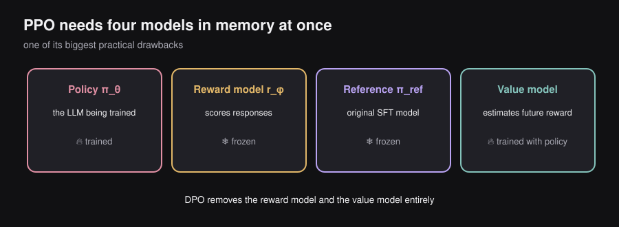
┌──────────────────────────────────────────────────────────────────────┐
│ MODELS NEEDED FOR PPO-BASED RLHF │
│ │
│ 1. Policy Model (πθ) — the LLM being trained (🔥 trained) │
│ 2. Reward Model (rφ) — evaluates responses (❄ frozen) │
│ 3. Reference Model (πref) — original SFT (❄ frozen) │
│ 4. Value Model — estimates expected future reward │
│ (🔥 trained jointly with policy) │
│ │
│ All 4 must fit in memory simultaneously during training! │
└──────────────────────────────────────────────────────────────────────┘7.25 — Challenges with RL-Based Approaches
The chapter explicitly calls out these challenges. They are important conceptually.
| Challenge | Description |
|---|---|
| Two-stage complexity | Must train a separate reward model first, then do RL. Two full training runs. |
| Many hyperparameters | (KL weight), (clip), learning rates, GAE , value loss weight… |
| Training instability | RL is notoriously unstable. Reward curves can collapse. Harder to debug than supervised learning. |
| Monitoring difficulty | What metric do you watch? Reward can increase while quality actually drops (reward hacking). |
| Need diversity in completions | PPO is on-policy: it generates fresh completions each step. If the policy collapses and always generates the same output, training stalls. |
| 4 models simultaneously | Huge memory cost. Policy + reference + reward + value model all loaded at once. |
| Unclear RL necessity | It’s not obvious that RL is required for preference tuning — which motivated DPO. |
On-Policy vs. Off-Policy
Off-policy (SFT): Trains from a fixed dataset. The model doesn’t generate its own training examples. The dataset was collected before training started.
On-policy (PPO): The model generates fresh completions during training, evaluates them with the reward model, and learns from those fresh completions. Training data evolves as the model evolves.
OFF-POLICY: Dataset → Model → Update
(dataset never changes)
ON-POLICY: Model → Generate → Evaluate → Update → Model → Generate → ...
(dataset is always fresh from the current model)Why does on-policy matter? Because if you train on old completions generated by a weaker policy, but your current policy is much better, the learning signal becomes stale and inefficient. PPO re-generates fresh completions each step to stay on-policy. This makes it more data-efficient in terms of quality but much more expensive in terms of compute (you’re always running inference to generate training data).
7.26 — Best-of-N (BoN): An RL-Free Alternative
The Idea
What if we could get the benefits of the reward model without the complexity of RL?
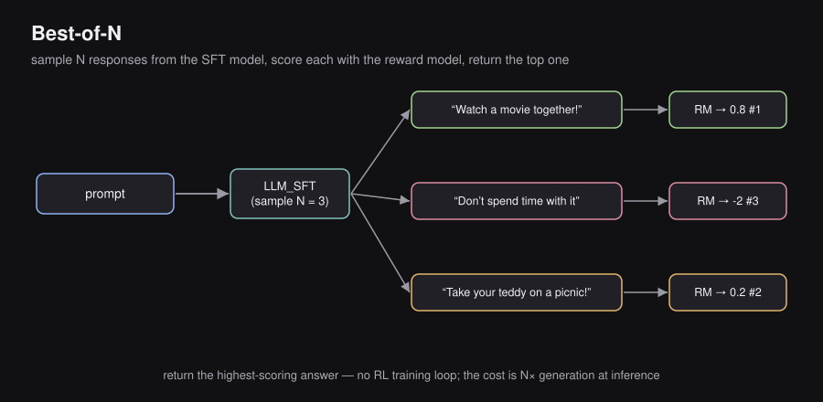
Best-of-N (BoN) is the simplest possible approach:
- Given a prompt, generate different responses using the SFT model (with temperature sampling for diversity).
- Score all responses with the reward model.
- Return the highest-scoring response.
┌───────────────────────────────────────────────────────────────────────┐
│ BEST-OF-N IN ACTION │
│ │
│ Prompt: "Suggest a new activity I could do with my teddy bear." │
│ │ │
│ ▼ │
│ LLM_SFT (sample 3 times) │
│ / | \ │
│ ↓ ↓ ↓ │
│ "Watch a movie "Don't spend "Take your teddy │
│ together!" time with it" on a picnic!" │
│ │ │ │ │
│ ▼ ▼ ▼ │
│ RM RM RM │
│ │ │ │ │
│ 0.8 -2 0.2 │
│ ← RANK 1 ← ← RANK 3 ← ← RANK 2 ← │
│ │ │
│ ▼ │
│ Return: "Watch a movie together!" ✓ │
└───────────────────────────────────────────────────────────────────────┘BoN Advantages and Disadvantages
Advantages:
- No RL training required — dramatically simpler
- No need for value functions, no on-policy sampling loop
- Surprisingly strong performance (competitive with PPO at moderate N)
- Easy to implement
Disadvantages:
- Expensive at inference time: Every user query requires full forward passes + reward model evaluations. If , each response costs 32× more compute.
- Does not improve the underlying model — the SFT model itself is unchanged
- Not scalable for production serving where latency matters
When to use BoN: In research settings, offline evaluations, or when you can afford higher inference compute. Not practical for real-time chatbots.
7.27 — Direct Preference Optimization (DPO)
Rafailov et al., 2023 — “Direct Preference Optimization: Your Language Model is Secretly a Reward Model”
The Motivation
The researchers asked a simple question: Do we actually need reinforcement learning for preference tuning?
RL is complex, unstable, and expensive. BoN is simple but inference-time expensive. Is there a way to get the benefits of RLHF using simple supervised learning?
The answer from DPO: Yes.
DPO vs. RLHF Pipeline
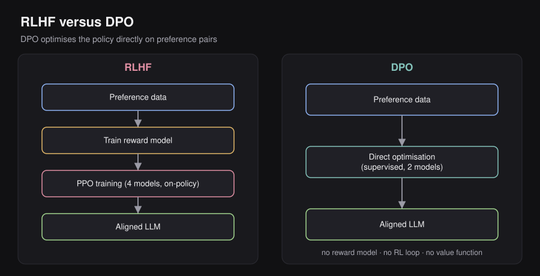
┌─────────────────────────────────────────────────────────────────────┐
│ RLHF PIPELINE DPO PIPELINE │
│ │
│ Preference Data Preference Data │
│ │ │ │
│ ▼ │ │
│ Train Reward Model │ │
│ │ │ │
│ ▼ │ │
│ PPO RL Training ▼ │
│ (4 models, on-policy) Direct Optimization │
│ │ (supervised, 2 models) │
│ ▼ │ │
│ Aligned LLM ▼ │
│ Aligned LLM │
└─────────────────────────────────────────────────────────────────────┘
No explicit reward model!
No RL loop!
No value function!
No on-policy sampling!The DPO Loss Function
The final DPO loss (we’ll derive it below) is:
Every term explained:
| Symbol | Meaning |
|---|---|
| The policy LLM being trained | |
| The frozen reference SFT model | |
| The winning (preferred) response | |
| The losing (rejected) response | |
| Controls how much to penalize deviation from the reference model | |
| Log-ratio: how much more (or less) likely is under the new policy vs. old policy |
What the loss does in plain English:
The term inside the is:
DPO tries to make this quantity large and positive, which means:
- Increase the relative probability of (make the policy prefer the winner more than the reference model did)
- Decrease the relative probability of (make the policy like the loser less than the reference model did)
- The controls how strongly to enforce these changes (larger = stay closer to the reference model)
No appears anywhere! There is no separate reward model. The reward is implicit in the log-probability ratios.
Where Does DPO Come From? (The Derivation)
The DPO paper showed that you can mathematically derive the DPO loss from the RLHF objective in 5 steps. This is the key insight: DPO and PPO-RLHF are optimizing equivalent objectives under certain assumptions.
┌──────────────────────────────────────────────────────────────────────────┐
│ DPO DERIVATION (5 STEPS) │
│ │
│ Step 1: Start from the PPO objective │
│ ──────────────────────────────────── │
│ max E[r(x,y)] - β·D_KL[πθ(y|x) ‖ πref(y|x)] │
│ │
│ Step 2: Derive the closed-form optimal policy │
│ ──────────────────────────────────────────────── │
│ π*(y|x) ∝ πref(y|x) · exp(r(x,y)/β) │
│ │
│ (When this optimal policy is plugged into the objective, │
│ it simultaneously maximizes reward and minimizes KL divergence) │
│ │
│ Step 3: Invert to identify an implicit "reward" term │
│ ────────────────────────────────────────────────── │
│ r*(x,y) = β·log[π*(y|x) / πref(y|x)] + β·log Z(x) │
│ │
│ where Z(x) is a partition function (normalizer). │
│ Key insight: The reward can be expressed purely in terms of │
│ log-probability ratios of the policy vs. reference! │
│ │
│ Step 4: Plug into Bradley-Terry formulation │
│ ───────────────────────────────────────────── │
│ p*(yw ≻ yl | x) = σ(r*(x,yw) - r*(x,yl)) │
│ = σ(β·log[π*(yw|x)/πref(yw|x)] │
│ - β·log[π*(yl|x)/πref(yl|x)]) │
│ │
│ (The Z(x) terms cancel out in the difference — this is why │
│ the intractable partition function disappears!) │
│ │
│ Step 5: Apply maximum likelihood → DPO loss │
│ ───────────────────────────────────────────── │
│ L_DPO = -E[log σ(β·log[πθ(yw|x)/πref(yw|x)] │
│ - β·log[πθ(yl|x)/πref(yl|x)])] │
│ │
│ Replace π* with πθ (the parametric policy we're training) │
└──────────────────────────────────────────────────────────────────────────┘The beautiful insight: The partition function — which would normally make the reward model intractable — cancels out in the Bradley-Terry difference. This is why DPO works without needing to explicitly compute or train a reward model.
Why β Matters
controls the temperature of the KL constraint:
- Small (e.g., 0.01): Weak reference constraint. The policy can move far from the SFT model. Risk of reward hacking / forgetting.
- Large (e.g., 1.0): Strong reference constraint. The policy stays very close to SFT. May not learn strong preferences.
- Typical values: in practice.
DPO Intuition in One Sentence
“For each (winner, loser) pair, increase the likelihood of the winner and decrease the likelihood of the loser — but measure likelihood relative to the reference model, and scale this adjustment by .”
Common Misconception
Misconception: DPO removes the need for a reference model.
Reality: DPO still needs the reference model — it just doesn’t need to train a separate reward model. The reference model (frozen SFT) is evaluated at every training step to compute the log-probability ratios. The reference model is the “anchor” that prevents the policy from drifting arbitrarily.
7.28 — RLHF vs. DPO: A Comparison
| Property | RLHF (PPO) | DPO |
|---|---|---|
| Training paradigm | Reinforcement learning | Supervised learning |
| Models required | 4 (policy, reference, reward, value) | 2 (policy, reference) |
| Reward model | Explicit, trained separately | Implicit (log-ratio) |
| Training data | On-policy (generated fresh each step) | Off-policy (fixed preference pairs) |
| Implementation complexity | Very high | Moderate |
| Hyperparameters | Many (β, ε, GAE λ, value weight…) | Few (mainly β) |
| Training stability | Can be unstable | More stable |
| Memory cost | Very high (4 models) | Lower (2 models) |
| Performance | No consensus; task-dependent | No consensus; task-dependent |
| Production usage | Used by OpenAI (InstructGPT, GPT-4) | Widely used in open-source models |
Key quote from the chapter: “No common absolute consensus. Varies from task to task and sensitive to implementation.” — There is no universal winner.
When to prefer DPO:
- Simpler engineering stack needed
- Research experiments where you want to iterate quickly
- Open-source / academic settings with limited GPU memory
When to prefer PPO:
- Complex alignment tasks where the reward model learns nuanced preferences
- Tasks where on-policy data generation is essential (math reasoning, code)
- When you have the infrastructure to run 4 large models
7.29 — End-to-End Story Analogy
Imagine you are training a brilliant but socially inexperienced intern named Alex at a publishing company.
Pretraining → Alex spends years reading every book, article, and document ever published. Alex now knows everything about the world, but has no idea how to write for the company’s clients.
SFT → You show Alex 10,000 examples of good client reports. Alex learns the format: how to start, what sections to include, how to conclude. Alex becomes a competent junior writer.
Problem arises → Alex occasionally writes reports that are technically correct but tone-deaf (“Your product has fundamental flaws. Recommend discontinuing.”). This is factually accurate but not what clients want.
Preference data collection → You have senior writers compare Alex’s drafts. They pick the better one of each pair: “Draft A is better than Draft B because it’s constructive.” You collect 10,000 such comparisons.
Reward model training → You hire a trusted editor (the Reward Model) and train her on those 10,000 comparisons. Now she can automatically score any of Alex’s future drafts: “+3.2” for constructive, “-1.8” for tone-deaf.
RLHF with PPO → Alex starts writing drafts, the editor scores them, and Alex revises. But there’s a rule: Alex cannot change so dramatically that he forgets everything he learned in SFT (KL penalty). Alex iterates, guided by the editor’s scores, learning to write reports that are both accurate and well-received.
DPO alternative → Instead of going through the editor each time, you distill all those 10,000 comparisons into a direct training signal. You show Alex: “Here’s a good draft, here’s a bad draft. Become more like the good draft and less like the bad draft.” Simpler, but Alex never gets real-time feedback during generation.
The result → Alex can now produce warm, constructive, client-friendly reports. The tone-deaf mistake no longer happens.
7.30 — Cheat Sheet
The Complete Story in One Flow
Pretraining → SFT → [SFT has limitations] → Collect Preference Data
│
┌────────────────────────┤
▼ ▼
RLHF PATH (PPO) DPO PATH
│ │
Train Reward Model Log-ratio loss
(Bradley-Terry loss) directly on
│ (x, yw, yl) pairs
RL with PPO │
(+ KL penalty │
+ value function │
+ advantage) │
└────────────────────────┘
│
Aligned LLM ✓Key Formulas
| Formula | What it is |
|---|---|
| Bradley-Terry preference probability | |
| Reward model training loss | |
| PPO RLHF objective | |
| Advantage = how much better than expected | |
| PPO probability ratio | |
| KL Divergence | |
| DPO loss |
One-Liner Concept Definitions
| Concept | One-Liner |
|---|---|
| Preference Tuning | Teaching a model what not to generate using comparative human feedback |
| Pairwise Preference | “A is better than B” — the signal that powers all of RLHF and DPO |
| Reward Model | A neural network that imitates human judgment and outputs a scalar score |
| Bradley-Terry | The probabilistic model that converts pairwise comparisons into a training loss |
| Sigmoid | Converts reward difference into preference probability between 0 and 1 |
| Policy | The LLM’s probability distribution over the next token |
| KL Divergence | Measures how different two probability distributions are (prevents policy drift) |
| KL Penalty | A regularization term that keeps the trained policy close to the reference SFT model |
| Reward Hacking | Exploiting weaknesses in the reward model to get high scores while being unhelpful |
| Goodhart’s Law | When a measure becomes a target, it ceases to be a good measure |
| PPO | Proximal Policy Optimization — RL algorithm that makes small, stable policy updates |
| PPO-Clip | Clips the probability ratio to prevent large, destabilizing updates |
| PPO-KL | Adds KL divergence as a direct penalty to the PPO objective |
| Value Function | Predicts expected future reward from a partial response |
| Advantage | How much better/worse an action was compared to the baseline (Value) |
| GAE | Generalized Advantage Estimation — reduces variance in advantage estimates |
| On-Policy | Training from data generated by the current model (PPO) |
| Off-Policy | Training from a fixed dataset not generated by the current model (SFT, DPO) |
| Best-of-N | Generate N responses, return the one with the highest reward model score |
| DPO | Direct Preference Optimization — trains directly from preferences, no RL needed |
| Implicit Reward | In DPO, the reward is encoded in log-probability ratios, not a separate network |
| Reference Model | The frozen SFT model used as an anchor in both PPO and DPO |
7.31 — Glossary
| Term | Full Name / Definition |
|---|---|
| RLHF | Reinforcement Learning from Human Feedback |
| SFT | Supervised Fine-Tuning — training on (prompt, response) demonstration pairs |
| Preference Tuning | The third stage of LLM training; teaches the model to prefer good outputs over bad ones |
| Pairwise Preference | A label of the form “response A is better than response B” |
| Preference tuple: prompt , winning response , losing response | |
| Reward Model (RM) | A neural network that outputs a scalar quality score for a (prompt, response) pair |
| Reward Head | A linear layer added to the LLM backbone that outputs a single scalar instead of vocabulary probabilities |
| Bradley-Terry | A probabilistic model that converts pairwise comparisons into preference probabilities using an exponential/sigmoid function |
| Sigmoid | The function ; maps any real number to |
| Policy | The LLM’s probability distribution over the next token |
| Reference Model | The frozen SFT model used as an anchor in both PPO and DPO |
| KL Divergence | Kullback-Leibler Divergence; measures how different two probability distributions are |
| KL Penalty | Adding to the objective to prevent excessive policy drift |
| Reward Hacking | When the model exploits weaknesses in the reward model to get high scores while being actually unhelpful |
| Goodhart’s Law | “When a measure becomes a target, it ceases to be a good measure” |
| PPO | Proximal Policy Optimization — RL algorithm that constrains policy update size |
| Proximal | “Stay close to” — referring to the constraint that updates should not be too large |
| PPO-Clip | PPO variant that clips the probability ratio to |
| PPO-KL | PPO variant that adds a KL divergence penalty instead of clipping |
| Probability Ratio | — how much the policy has changed for a specific action |
| Value Function | A network that predicts expected future reward from the current partial generation |
| Advantage | — how much better/worse an action was compared to baseline expectation |
| GAE | Generalized Advantage Estimation — a method to compute lower-variance advantage estimates |
| On-Policy | Training on data generated by the current model (e.g., PPO) |
| Off-Policy | Training on a fixed dataset not generated by the current model (e.g., DPO, SFT) |
| Best-of-N (BoN) | Generate N responses and return the one with the highest reward model score |
| DPO | Direct Preference Optimization — trains directly from preference pairs without an explicit reward model or RL loop |
| Implicit Reward | In DPO, the reward is encoded in rather than a separate network |
| (in DPO) | Hyperparameter controlling how strongly the policy is constrained to stay near the reference model |
| Partition Function | A normalizing constant that appears in the optimal policy derivation but cancels out in DPO |
| InstructGPT | The paper by Ouyang et al. (2022) that introduced RLHF for instruction following (the foundation of ChatGPT) |
| Reward Bench | A benchmark for evaluating reward models for language modeling (Lambert et al., 2024) |
| GRPO | Group Relative Policy Optimization — an alternative to PPO used by DeepSeekMath |
| Listwise | A preference format where multiple responses are fully ranked from best to worst |
| Pointwise | A preference format where each response receives an absolute scalar score |
7.32 — Papers Covered
| Paper | Authors | Year | Key Contribution |
|---|---|---|---|
| Scaling Laws for Neural Language Models | Kaplan et al. (OpenAI) | 2020 | Performance follows power laws in parameters, data, and compute; larger models are more sample-efficient per token |
| Training Compute-Optimal Large Language Models | Hoffmann et al. (DeepMind) | 2022 | Chinchilla law: ; GPT-3 was severely undertrained on data |
| ZeRO: Memory Optimizations Toward Training Trillion Parameter Models | Rajbhandari et al. (Microsoft) | 2019 | Three-stage partitioning of optimizer state, gradients, and parameters across GPUs; enables trillion-parameter training |
| FlashAttention: Fast and Memory-Efficient Exact Attention with IO-Awareness | Dao et al. | 2022 | Tiled SRAM-based exact attention via online softmax; 2–4× speedup, memory; no quality loss |
| Mixed Precision Training | Micikevicius et al. (NVIDIA) | 2017 | FP16/BF16 compute with FP32 master weights; now standard in all large-scale LLM training |
| Finetuned Language Models Are Zero-Shot Learners | Wei et al. (Google) | 2022 | Instruction tuning enables generalization to new task types not seen during finetuning |
| LoRA: Low-Rank Adaptation of Large Language Models | Hu et al. (Microsoft) | 2021 | ; freezes base model, trains low-rank adapters only; enables SFT on consumer hardware |
| QLoRA: Efficient Finetuning of Quantized LLMs | Dettmers et al. | 2023 | NF4 quantization of frozen base + BF16 LoRA adapters + double quantization; 65B on a single 48 GB GPU |
| LoRA Without Regret | Schulman et al. | 2025 | Feed-forward MLP layers most important for LoRA; empirical LR and batch size guidance for practitioners |
| The Llama 3 Herd of Models | Meta AI | 2024 | 15T-token pretraining; demonstrates deliberate over-training beyond Chinchilla for cheaper inference |